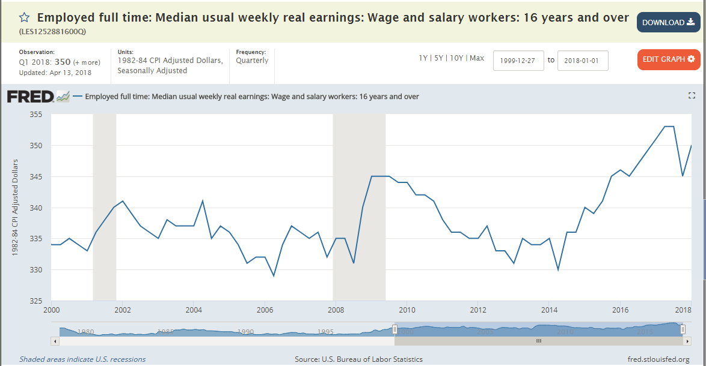
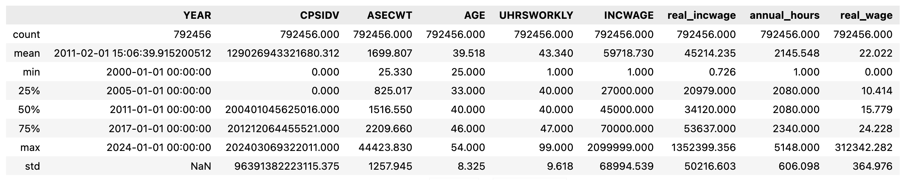
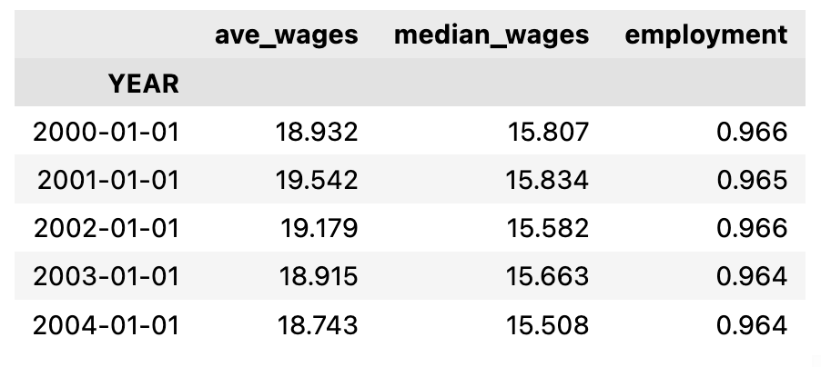
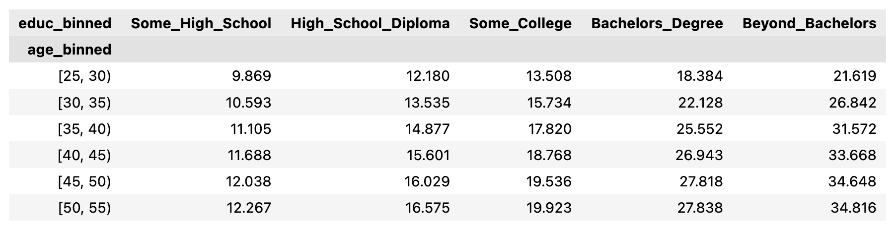

HW Guide: Wage Growth During the Recession#
This note is designed to help you understand the full scope of the task. The homework will have you fill in the code to implement some of the functions used here. This notebook will put together all of those functions so as to visualize the final result. If you want, you can first follow the steps of this notebook to help you write the code. You can then refactor the code by moving it into separate files and functions that are covered by the unit tests. The point of this document is to help guide you on the homework.
Before you start this assignment, you’ll have to install the weightedstats package. You can do this by running pip install weightedstats in a terminal. For more information, see here: https://pypi.org/project/weightedstats/ . We will use this package to compute a weighted median. The package is included in the requirements.txt for the HW repo, so you can just use that if you’d like.
import numpy as np
import pandas as pd
from matplotlib import pyplot as plt
import weightedstats
import seaborn as sns
sns.set()
import config
from pathlib import Path
import load_fred
DATA_DIR = Path(config.DATA_DIR)
import load_cps
import wage_growth_analytics
# Change default pandas display options
pd.options.display.max_columns = 25
pd.options.display.max_rows = 500
pd.options.display.max_colwidth = 100
pd.set_option('display.float_format', lambda x: '%.3f' % x)
# Change default figure size
plt.rcParams['figure.figsize'] = 6, 5
1. Introduction#
Wages at the aggregate level have been found to rise during the recent recession (or at least not decline). This is surprising given that aggregate labor conditions were so weak. Many economists have viewed this as a puzzle. The goal in this question is to assess whether this is a puzzle, given that the composition of workers are changing over time. We begin by establishing the facts from which this puzzle arises.
The great recession is generally defined as having lasted from December 2007 to June 2009. For example, see the corresponding article on Wikipedia: https://en.wikipedia.org/wiki/Great_Recession_in_the_United_States
The Great Recession in the United States was a severe financial crisis combined with a deep recession. While the recession officially lasted from December 2007 to June 2009, it took several years for the economy to recover to pre-crisis levels of employment and output.
Consider the following graph. This graph plots the median weekly real earnings for wage and salary workers ages 16 years and older. The shaded areas in the plots denote officially defined periods of recession, as defined by NBER. Notice that wages during the period of the great recession appear to be increasing. In this document we will be investigating this fact.

Step 1. Retrieve and plot this data from FRED#
Find the data for the FRED plot shown above. You can find it using Google and the title.
Also, find the data for the same figure, except restricted to “men”. This is called “Employed full time: Median usual weekly real earnings: Wage and salary workers: 16 years and over: Men (LES1252881900Q)” To eliminate other potentially confounding factors, we will try to narrow the demographic group we are studying.
Make a simple plot of both of these data series using Pandas’ built-in plot methods. Restrict the time period to show from 2000 to 2017.
No need to make the shaded recession bars in your plot. I’m just looking for the simplest, easiest plot possible. Just be sure it’s labelled (e.q, use
plt.title('Median ...')).
df_fred = load_fred.pull_all()
load_fred.series_descriptions
{'LES1252881600Q': 'Employed full time: Median usual weekly real earnings: Wage and salary workers: 16 years and over',
'LES1252881900Q': 'Employed full time: Median usual weekly real earnings: Wage and salary workers: 16 years and over: Men'}
df_fred = df_fred.rename(columns={'LES1252881600Q':'Median wages (all)'})
df_fred = df_fred.rename(columns={'LES1252881900Q':'Median wages (men)'})
df_fred['2000':'2017'].plot()
plt.title('Median usual weekly real earnings');
df_fred.plot()
plt.title('Median usual weekly real earnings');
2. Demographic data from US Current Population Survey#
To study this puzzling fact, we will analyze how changing demographics might affect our aggregate measures of wages. One of our biggest concerns is that as employment rates fell, they fell more for low educated workers than high educated workers. That means the average wages we are measuring will actually be comparing different types of workers in 2010 relative to 2006. This could potentially explain why wages are rising. We will attempt to compensate for this by constructing a demographically adjusted time series for wages.
Game Plan#
Here is a summary of what we will do. I will give you more specific instructions afterwards to walk you through this.
Use data from the 2000-2023 March CPS (downloaded from IPUMS CPS web site) to examine the time series (annual) trend in both nominal and real wages for 25-54 year old men not living in group quarters. (You need to download the group quarters variable). Wages will be defined as annual earnings (last year) divided by annual hours (last year). Annual hours can be computed by multiplying weeks worked last year by usual hours worked (last year). You should do this for a sample of all workers with a positive wage last year. Typically, you can convert to real wages using any deflator you wish. Here, I will require using the CPI99 variable to convert to 1999 dollars. (Note: Many economists like to use the June CPI-U. June is in the middle of the year and, for that reason, avoids some issues with seasonality. The choice of year doesn’t matter.)
Note about ASEC#
Be sure to download only the ASEC samples. The ASEC supplement is the March CPS. The ASEC includes extra variables that are not included in the basic monthly CPS survey. From Wikipedia, the ASEC is described as the following:,
Since 1948, the CPS has included supplemental questions (at first, in April; later, in March) on income received in the previous calendar year, which are used to estimate the data on income and work experience. These data are the source of the annual Census Bureau report on income, poverty, and health insurance coverage…
Downloading the March samples from the “Basic Monthly” samples doesn’t give us what we need. See the included screenshot. The arrow points out the fact that these variables are missing in the March basic monthly samples but are available in the ASEC samples.

Step 2. Download and Read the CPS Data from IPUMS#
When you download the data from IPUMS, only download the data that you need. This is important, because the data gets very big very fast when you start adding other variables. IPUMS will automatically add certain variables to your “cart”. Go ahead and remove the ones that you don’t need. This will make things much easier. The list of variables that you need are listed below. Make sure to stick to just those variables. You will fill in the code in the file called load_cps.py that will clean the raw IPUMS CPS data. This fill assumes that you have downloaded the data manually from the IPUMS CPS website as described above and saved it in the directory ../data/manual relative to the source file. Relative to the project home directory, this is ./data/manual. Recall that we are putting it in the manual directory instead of the pulled directory, because the data was not automatically pulled from the source.
The data should contain the following variables:
YEAR (Survey year)
GQ (Group Quarters status)
CPI99 (CPI-U adjustment factor to 1999 dollars)
ASECWT (Annual Social and Economic Supplement Weight)
AGE (Age)
SEX (Sex)
LABFORCE (Labor force status)
EDUC (Educational attainment recode)
WKSWORK1 (Weeks worked last year)
UHRSWORKLY (Usual hours worked per week (last yr))
INCWAGE (Wage and salary income)
When you’re finished, run the following code to see how much memory your data set is using, the list of variables, and the data types each variable is saved as:
DATA_DIR = config.DATA_DIR
MANUAL_DATA_DIR = config.MANUAL_DATA_DIR
df = load_cps.load_raw(MANUAL_DATA_DIR)
df.info()
<class 'pandas.core.frame.DataFrame'>
RangeIndex: 4752652 entries, 0 to 4752651
Data columns (total 12 columns):
# Column Dtype
--- ------ -----
0 YEAR datetime64[ns]
1 GQ category
2 CPI99 float64
3 CPSIDV int64
4 ASECWT float64
5 AGE int64
6 SEX category
7 LABFORCE category
8 EDUC category
9 WKSWORK1 int64
10 UHRSWORKLY int64
11 INCWAGE int64
dtypes: category(4), datetime64[ns](1), float64(2), int64(5)
memory usage: 308.2 MB
As you can see, this results in
<class 'pandas.core.frame.DataFrame'>
RangeIndex: 4752652 entries, 0 to 4752651
Data columns (total 12 columns):
# Column Dtype
--- ------ -----
0 YEAR datetime64[ns]
1 GQ category
2 CPI99 float64
3 CPSIDV int64
4 ASECWT float64
5 AGE int64
6 SEX category
7 LABFORCE category
8 EDUC category
9 WKSWORK1 int64
10 UHRSWORKLY int64
11 INCWAGE int64
dtypes: category(4), datetime64[ns](1), float64(2), int64(5)
memory usage: 308.2 MB
If you use restrict your data set to exactly these variables and follow the instructions precisely, you should be able to replicate the exact numbers that I get. (For example, don’t drop missing data until the instructions tell you to.)
df.describe()
| YEAR | CPI99 | CPSIDV | ASECWT | AGE | WKSWORK1 | UHRSWORKLY | INCWAGE | |
|---|---|---|---|---|---|---|---|---|
| count | 4752652 | 4752652.000 | 4752652.000 | 4752652.000 | 4752652.000 | 4752652.000 | 4752652.000 | 4752652.000 |
| mean | 2011-05-27 05:38:11.579523328 | 0.772 | 130839243535879.688 | 1683.323 | 35.410 | 23.563 | 511.442 | 23325037.674 |
| min | 2000-01-01 00:00:00 | 0.547 | 0.000 | 21.090 | 0.000 | 0.000 | 1.000 | 0.000 |
| 25% | 2005-01-01 00:00:00 | 0.694 | 0.000 | 817.808 | 16.000 | 0.000 | 40.000 | 0.000 |
| 50% | 2011-01-01 00:00:00 | 0.764 | 200412011918016.000 | 1506.560 | 35.000 | 6.000 | 70.000 | 28000.000 |
| 75% | 2017-01-01 00:00:00 | 0.882 | 201303039922031.000 | 2211.361 | 52.000 | 52.000 | 999.000 | 142000.000 |
| max | 2024-01-01 00:00:00 | 1.000 | 202403069322011.000 | 44423.830 | 90.000 | 52.000 | 999.000 | 99999999.000 |
| std | NaN | 0.117 | 95862336975917.375 | 1224.023 | 22.360 | 24.782 | 480.190 | 42264633.688 |
When filling in the missing values, keep in mind the codings for each variable. Consult the associated codebook and IPUMS documentation for complete information. (I’ve included the codebook from my data extract in the file named: cps_00007_codebook.pdf)
For your convenience, I’ve reproduced some information about some of our variables below.
UHRSWORKLY#
For UHRSWORKLY: Usual hours worked per week (last yr) https://cps.ipums.org/cps-action/variables/UHRSWORKLY#codes_section
UHRSWORKLY is a 2-digit numeric value.
99 = 99 hours or more
999 = NIU (Not in universe)
WKSWORK1 reports the number of weeks, in single weeks, that the respondent worked for profit, pay, or as an unpaid family worker during the preceding calendar year. Respondents were prompted to count weeks in which they worked for even a few hours and to include paid vacation and sick leave as work. Information on weeks worked during the preceding year is available in the form of intervals for 1962 forward in the WKSWORK2 variable.
INCWAGE#
For INCWAGE: Wage and salary income https://cps.ipums.org/cps-action/variables/INCWAGE#description_section
Codes
99999999 = N.I.U. (Not in Universe).
99999998 = Missing.
INCWAGE indicates each respondent’s total pre-tax wage and salary income–that is, money received as an employee–for the previous calendar year. Amounts are expressed as they were reported to the interviewer; users must adjust for inflation using Consumer Price Index adjustment factors.
For ASEC samples 1988-onward, INCWAGE is derived from a Census recode variable. The topcoded components of INCWAGE are OINCWAGE and INCLONGJ. OINCWAGE is always a component of INCWAGE. When SRCEARN indicates that INCLONGJ is earned from wage and salary, INCLONGJ is an additional component of INCWAGE.
CPI99#
For CPI99: CPI99 is a 4-digit variable with three implied decimal places. https://cps.ipums.org/cps-action/variables/CPI99#description_section
CPI99 provides the CPI-U multiplier (available from the Bureau of Labor Statistics) to convert dollar figures to constant 1999 dollars. (This corresponds to the dollar amounts in the 2000 CPS, which inquired about income in 1999.) Multiplying dollar amounts by this variable (which is constant within years) will render them comparable across time and thus suitable for multivariate analysis.
For more information on how to use CPI99, please see the IPUMS inflation adjustment page.
LABFORCE#
https://cps.ipums.org/cps-action/variables/LABFORCE#codes_section
Codes:
0 NIU
1 No, not in the labor force
2 Yes, in the labor force
LABFORCE is a dichotomous variable indicating whether the respondent participated in the labor force during the preceding week. See EMPSTAT for a more detailed employment status variable. Those coded as “yes” in LABFORCE were either: were at work; held a job but were temporarily absent from work due to factors like vacation or illness; were seeking work; or were temporarily laid off from a job during the reference period.
Because the CPS is designed to measure unemployment in the civilian population, the original dichotomous employment status variable in the survey classifies members of the armed forces as NIU (Not in universe).
Step 3. Recode the missing data#
Each variable in the CPS data that we downloaded has specific codes used to represent missing data. There is also a difference between data that is missing and data that is considered “NIU”, meaning “Not in Universe.” Consult the documentation for the meaning of each of the codes for each of the variables. Convert all missing values and NIU values to np.nan.
For example, you should include the following code for INCWAGE:
# INCWAGE: Missing values
# 99999999 = N.I.U. (Not in Universe).
# 99999998 = Missing.
df.loc[df['INCWAGE'] == 99999999, 'INCWAGE'] = np.nan
df.loc[df['INCWAGE'] == 99999998, 'INCWAGE'] = np.nan
Be sure to look at the encodings on IPUMS to make sure you’re properly coding all variables in your dataset—not just the ones that I listed above (not necessarily comprehensive).
df = load_cps.load_clean(MANUAL_DATA_DIR)
df.describe()
| YEAR | CPI99 | CPSIDV | ASECWT | AGE | WKSWORK1 | UHRSWORKLY | INCWAGE | |
|---|---|---|---|---|---|---|---|---|
| count | 4752652 | 4752652.000 | 4752652.000 | 4752652.000 | 4752652.000 | 4752652.000 | 2412892.000 | 3645116.000 |
| mean | 2011-05-27 05:38:11.579523328 | 0.772 | 130839243535879.688 | 1683.323 | 35.410 | 23.563 | 38.661 | 28034.241 |
| min | 2000-01-01 00:00:00 | 0.547 | 0.000 | 21.090 | 0.000 | 0.000 | 1.000 | 0.000 |
| 25% | 2005-01-01 00:00:00 | 0.694 | 0.000 | 817.808 | 16.000 | 0.000 | 36.000 | 0.000 |
| 50% | 2011-01-01 00:00:00 | 0.764 | 200412011918016.000 | 1506.560 | 35.000 | 6.000 | 40.000 | 12000.000 |
| 75% | 2017-01-01 00:00:00 | 0.882 | 201303039922031.000 | 2211.361 | 52.000 | 52.000 | 40.000 | 40000.000 |
| max | 2024-01-01 00:00:00 | 1.000 | 202403069322011.000 | 44423.830 | 90.000 | 52.000 | 99.000 | 2099999.000 |
| std | NaN | 0.117 | 95862336975917.375 | 1224.023 | 22.360 | 24.782 | 12.122 | 51670.193 |
Step 4. Select the desired subsample of the data#
As we mentioned, we want to narrow the demographic group under consideration. Drop all observations from df that don’t match the following conditions.
Use data from the 2000-2023 March CPS for 25-54 year old men not living in group quarters. Only consider individuals with a strictly positive income from wages.
For example, your code might start like this:
# GQ = 0 for vacant units, 1 for Households, 2 for group quarters
df = df[df['GQ'] == 1]
df = wage_growth_analytics.s04_subsample(df)
df.describe()
| YEAR | CPI99 | CPSIDV | ASECWT | AGE | WKSWORK1 | UHRSWORKLY | INCWAGE | |
|---|---|---|---|---|---|---|---|---|
| count | 792456 | 792456.000 | 792456.000 | 792456.000 | 792456.000 | 792456.000 | 792456.000 | 792456.000 |
| mean | 2011-02-01 15:06:39.915200512 | 0.777 | 129026943321680.312 | 1699.807 | 39.518 | 49.204 | 43.340 | 59718.730 |
| min | 2000-01-01 00:00:00 | 0.547 | 0.000 | 25.330 | 25.000 | 1.000 | 1.000 | 1.000 |
| 25% | 2005-01-01 00:00:00 | 0.694 | 0.000 | 825.017 | 33.000 | 52.000 | 40.000 | 27000.000 |
| 50% | 2011-01-01 00:00:00 | 0.764 | 200401045625016.000 | 1516.550 | 40.000 | 52.000 | 40.000 | 45000.000 |
| 75% | 2017-01-01 00:00:00 | 0.882 | 201212064455521.000 | 2209.660 | 46.000 | 52.000 | 47.000 | 70000.000 |
| max | 2024-01-01 00:00:00 | 1.000 | 202403069322011.000 | 44423.830 | 54.000 | 52.000 | 99.000 | 2099999.000 |
| std | NaN | 0.118 | 96391382223115.375 | 1257.945 | 8.325 | 8.436 | 9.618 | 68994.539 |
Step 5. Construct new variables#
Now, construct new variables called real_incwage, annual_hours, real_wage, and in_labor_force.
real_incwageis the CPI99 deflator times annual earnings (last year)annual_hoursis the weeks worked last year times the usual hours worked per week (last year).real_wageis the annual earnings (last year) divided by annual hours (last year). Be sure to setreal_wageequal to zero wheneverannual_hoursis equal to zero. (I use the following code:
# To prevent infinite wages
df.loc[df['annual_hours'] <= 0, 'real_wage'] = 0
in_labor_forceis a boolean variable that is True if the individual was coded as “Yes, in the labor force.” Use theLABFORCEvariable for this.
df = wage_growth_analytics.s05_new_vars(df)
df.describe()
| YEAR | CPI99 | CPSIDV | ASECWT | AGE | WKSWORK1 | UHRSWORKLY | INCWAGE | real_incwage | annual_hours | real_wage | |
|---|---|---|---|---|---|---|---|---|---|---|---|
| count | 792456 | 792456.000 | 792456.000 | 792456.000 | 792456.000 | 792456.000 | 792456.000 | 792456.000 | 792456.000 | 792456.000 | 792456.000 |
| mean | 2011-02-01 15:06:39.915200512 | 0.777 | 129026943321680.312 | 1699.807 | 39.518 | 49.204 | 43.340 | 59718.730 | 45214.235 | 2145.548 | 22.022 |
| min | 2000-01-01 00:00:00 | 0.547 | 0.000 | 25.330 | 25.000 | 1.000 | 1.000 | 1.000 | 0.726 | 1.000 | 0.000 |
| 25% | 2005-01-01 00:00:00 | 0.694 | 0.000 | 825.017 | 33.000 | 52.000 | 40.000 | 27000.000 | 20979.000 | 2080.000 | 10.414 |
| 50% | 2011-01-01 00:00:00 | 0.764 | 200401045625016.000 | 1516.550 | 40.000 | 52.000 | 40.000 | 45000.000 | 34120.000 | 2080.000 | 15.779 |
| 75% | 2017-01-01 00:00:00 | 0.882 | 201212064455521.000 | 2209.660 | 46.000 | 52.000 | 47.000 | 70000.000 | 53637.000 | 2340.000 | 24.228 |
| max | 2024-01-01 00:00:00 | 1.000 | 202403069322011.000 | 44423.830 | 54.000 | 52.000 | 99.000 | 2099999.000 | 1352399.356 | 5148.000 | 312342.282 |
| std | NaN | 0.118 | 96391382223115.375 | 1257.945 | 8.325 | 8.436 | 9.618 | 68994.539 | 50216.603 | 606.098 | 364.976 |
Step 6. Drop data that we no longer need.#
Run the code below to drop data that we don’t need.
# Drop the variables that don't need anymore.
# Your data might not have some of these variables.
labels = ['GQ', 'SEX', 'LABFORCE', 'CPI99', 'INCTOT', 'WKSWORK1', ]
for label in labels:
try:
df.drop(labels=label, inplace=True, axis=1)
except:
pass
Also, after you do this, you should drop all rows that contain a missing value.
df = wage_growth_analytics.s06_drop(df)
Step 7. Generate summary statistics#
Use describe to generate summary statistics for at least the following variables:
AGE, INCWAGE, real_incwage, annual_hours, real_wage. (For now, disregard the fact that we need to use the survey weights to compute these figures.) What do you notice about the top end of the distribution of real_wage?
At this point, your answer should look like this: 
# There seem to be some very large wages at the top end of `real_wage`
df.describe()
| YEAR | CPSIDV | ASECWT | AGE | UHRSWORKLY | INCWAGE | real_incwage | annual_hours | real_wage | |
|---|---|---|---|---|---|---|---|---|---|
| count | 792456 | 792456.000 | 792456.000 | 792456.000 | 792456.000 | 792456.000 | 792456.000 | 792456.000 | 792456.000 |
| mean | 2011-02-01 15:06:39.915200512 | 129026943321680.312 | 1699.807 | 39.518 | 43.340 | 59718.730 | 45214.235 | 2145.548 | 22.022 |
| min | 2000-01-01 00:00:00 | 0.000 | 25.330 | 25.000 | 1.000 | 1.000 | 0.726 | 1.000 | 0.000 |
| 25% | 2005-01-01 00:00:00 | 0.000 | 825.017 | 33.000 | 40.000 | 27000.000 | 20979.000 | 2080.000 | 10.414 |
| 50% | 2011-01-01 00:00:00 | 200401045625016.000 | 1516.550 | 40.000 | 40.000 | 45000.000 | 34120.000 | 2080.000 | 15.779 |
| 75% | 2017-01-01 00:00:00 | 201212064455521.000 | 2209.660 | 46.000 | 47.000 | 70000.000 | 53637.000 | 2340.000 | 24.228 |
| max | 2024-01-01 00:00:00 | 202403069322011.000 | 44423.830 | 54.000 | 99.000 | 2099999.000 | 1352399.356 | 5148.000 | 312342.282 |
| std | NaN | 96391382223115.375 | 1257.945 | 8.325 | 9.618 | 68994.539 | 50216.603 | 606.098 | 364.976 |
df.query('real_wage > 300000')
| YEAR | CPSIDV | ASECWT | AGE | EDUC | UHRSWORKLY | INCWAGE | real_incwage | annual_hours | real_wage | in_labor_force | |
|---|---|---|---|---|---|---|---|---|---|---|---|
| 1944649 | 2009-01-01 | 200802018016011 | 3381.190 | 48 | 73 | 1.000 | 403543.000 | 312342.282 | 1.000 | 312342.282 | True |
Step 8. Plot a histogram of the average weekly hours and the average annual hours worked.#
That is, plot a histogram of UHRSWORKLY and for a histogram of annual_hours.
df[['UHRSWORKLY']].plot.hist();
df['annual_hours'].plot.hist();
Step 9. Plot a histogram of real wages.#
Plot a histogram of
real_wageusing the default number of bins in pandas.Plot a histogram of
real_wagefor only those withreal_wageless than 200. Use the default number of bins.Plot a histogram of
real_wagefor only those withreal_wageless than 200. Use 50 bins.
df['real_wage'].hist();
df.loc[df['real_wage'] < 200,'real_wage'].hist();
df.loc[df['real_wage'] < 200,'real_wage'].hist(bins=50)
plt.title('Wages in sample');

Step 10. Drop all rows that have wages above the 99th percentile and below the 1st percentile.#
For example, use the code q01 = df.real_wage.quantile(q=0.01) to compute the 1st percentile. Then use df = df[YOUR_MASK_HERE] or use df = df.query(YOUR_CODE_HERE).
df = wage_growth_analytics.s10_drop_by_percentiles(df)
df.describe()
| YEAR | CPSIDV | ASECWT | AGE | UHRSWORKLY | INCWAGE | real_incwage | annual_hours | real_wage | |
|---|---|---|---|---|---|---|---|---|---|
| count | 776592 | 776592.000 | 776592.000 | 776592.000 | 776592.000 | 776592.000 | 776592.000 | 776592.000 | 776592.000 |
| mean | 2011-02-05 00:10:56.072686848 | 129074592829024.172 | 1700.176 | 39.494 | 43.366 | 56126.002 | 42509.740 | 2149.628 | 19.461 |
| min | 2000-01-01 00:00:00 | 0.000 | 25.330 | 25.000 | 1.000 | 8.000 | 6.432 | 1.000 | 2.383 |
| 25% | 2005-01-01 00:00:00 | 0.000 | 825.170 | 32.000 | 40.000 | 27000.000 | 21252.000 | 2080.000 | 10.494 |
| 50% | 2011-01-01 00:00:00 | 200401049872011.000 | 1516.385 | 40.000 | 40.000 | 45000.000 | 34120.000 | 2080.000 | 15.779 |
| 75% | 2017-01-01 00:00:00 | 201212070162021.000 | 2210.150 | 46.000 | 46.000 | 70000.000 | 53091.000 | 2340.000 | 23.986 |
| max | 2024-01-01 00:00:00 | 202403069322011.000 | 44423.830 | 54.000 | 99.000 | 850000.000 | 554200.000 | 5148.000 | 116.763 |
| std | NaN | 96377910514422.531 | 1258.375 | 8.322 | 9.485 | 47781.583 | 35118.563 | 596.974 | 14.015 |
df['real_wage'].hist(bins=50)
<Axes: >
3. Recreate a Wage Series Like The One From FRED#
Step 11. Create time series for wages and employment#
These first series that we create will not be demographically adjusted. Create these series with the following variable names: median_wages, ave_wages, and employment. Each of these should be computed using the survey weights. Notice that np.average has a keyword argument for weights. To construct a weighted median, we will use the weightedstats package.
Here is the code to compute the weighted median. Fill in the rest of the code for the other variables.
col = 'real_wage'
weights='ASECWT'
median_wages = (
df
.dropna(subset=[col], how='any')
.groupby('YEAR')
.apply(lambda row: weightedstats.weighted_median(row[col], weights=row[weights]))
# Shift time back since the series represents wages from the previous year
.shift(-1)
)
NOTE: Wage data needs to be shifted backwards, but employment data does not need to be.
median_wages = wage_growth_analytics.s11_median_wages(df)
ave_wages = wage_growth_analytics.s11_ave_wages(df)
employment = wage_growth_analytics.s11_employment(df)
Step 12. Concatenate these time series variables together.#
Use pd.concat to create a new DataFrame called tdf that contains median_wages, ave_wages, and employment. Make sure that the column names are preserved in tdf.
Running tdf.head() should produce the following result at this point.

tdf = wage_growth_analytics.s12_time_series(df)
tdf.head()
| ave_wages | median_wages | employment | |
|---|---|---|---|
| YEAR | |||
| 2000-01-01 | 18.932 | 15.807 | 0.966 |
| 2001-01-01 | 19.542 | 15.834 | 0.965 |
| 2002-01-01 | 19.179 | 15.582 | 0.966 |
| 2003-01-01 | 18.915 | 15.663 | 0.964 |
| 2004-01-01 | 18.743 | 15.508 | 0.964 |
Step 13. Plot the series#
Plot ave_wages and median_wages on the same plot. Make another plot for employment.
tdf[['ave_wages', 'median_wages']].plot(title='Wages over time')
plt.legend(loc='center left', bbox_to_anchor=(1.0, 0.5));
employment.plot(title='Employment')
<Axes: title={'center': 'Employment'}, xlabel='YEAR'>

Step 14. Compute the autocorrelation of each variables in tdf#
HINT: You can compute the autocorrelation of a single series using, e.g., tdf.ave_wages.autocorr(). You can do this for each series in tdf in one go by using tdf.apply(lambda x: YOUR_CODE_HERE).
#autocorrelation
tdf.apply(lambda x: x.autocorr())
ave_wages 0.906
median_wages 0.797
employment 0.177
dtype: float64
Step 15. Compute the contemporeneous correlation between the variables in tdf.#
This amounts to simply calculating the correlation matrix.
tdf.corr()
| ave_wages | median_wages | employment | |
|---|---|---|---|
| ave_wages | 1.000 | 0.844 | -0.193 |
| median_wages | 0.844 | 1.000 | -0.180 |
| employment | -0.193 | -0.180 | 1.000 |
Step 16. Plot median wages and employment on the same graph#
Use the following starter code to plot these two series on the same graph, with separate y-axes (a left y-axis and a right y-axis).
ax = tdf[['median_wages']].plot(legend=False, color='red', label='Wght. Median Wages')
ax.grid(False)
ax.set_ylabel('Median Wages')
ax2 = ax.twinx()
ax2.grid(False)
ax2.set_ylabel('Employment')
tdf.employment.plot(ax=ax2)
ax.figure.legend()
<matplotlib.legend.Legend at 0x177e67c50>

Step 17. Plot median wages growth and employment on the same graph#
First, create new variables in tdf called ave_wage_growth and median_wage_growth. Apply the method pct_change() to the appropriate columns to create the new variable. This will compute the percent changes in each variable over time. Use the same code as from before to make the plot, but substitute in your new variable. Be sure to update the label on the axes.
Note: When computing various statistics, for example correlations, we want to beware of variables that are steadily growing or shrinking over time. Variables like this are said to be non-stationary. Usage of such variables without care can often lead to spurious correlations. In time series econometrics, there are various ways of transforming these variables into stationary variables. One method, which we’ll use here, is to compute percentage differences. Since we believe wages tend to increase over time, we want to difference (in our case, compute percentage differences) the wage variable. Our employment variable, however, is a ratio between zero and one that is not steadily growing or shrinking. So it’s ok.
tdf['ave_wage_growth'] = tdf['ave_wages'].pct_change(fill_method=None)
tdf['median_wage_growth'] = tdf['median_wages'].pct_change(fill_method=None)
ax = tdf['median_wage_growth'].plot(legend=False, color='red')
ax.grid(False)
ax.set_ylabel('Median Wages Growth')
ax2 = ax.twinx()
ax2.grid(False)
ax2.set_ylabel('Employment')
tdf['employment'].plot(ax=ax2)
ax.figure.legend();
## Extra:
# Note that it appears that employment and wage growth
# is slightly out of phase. This could be because the two
# are negatively correlated. Or maybe it's because we shouldn't
# have shifted wages back---even though it seemed like the appropriate
# thing to do given the definition of wages. We should probably
# leave it as it is, though.
print(tdf[['median_wage_growth']].corrwith(tdf.employment))
print(tdf[['median_wage_growth']].shift(1).corrwith(tdf.employment))
median_wage_growth -0.039
dtype: float64
median_wage_growth -0.144
dtype: float64
Step 18. Plot median wages growth and employment growth on the same graph#
Create a new variable in tdf called employment_growth. Again use .pct_change() to create it.
Use the same code as from before. However, this time let’s explore the relationship of wages with employment growth rather than the employment level. Be sure to update the labels of the axes so that we know what we’re looking at.
tdf['employment_growth'] = tdf['employment'].pct_change(fill_method=None)
ax = tdf['median_wage_growth'].plot(legend=False, color='red')
ax.grid(False)
ax.set_ylabel('Median wage growth')
ax2 = ax.twinx()
ax2.grid(False)
ax2.set_ylabel('Employment growth')
tdf['employment_growth'].plot(ax=ax2)
ax.figure.legend()
<matplotlib.legend.Legend at 0x34fe7b890>
Step 19. Use the code below as well as the graphs from before to describe what we’re seeing in the data.#
Use .corr() to compute the correlations between the various wage growth series and the measures of employment in tdf. Give a summary of what you’re seeing in the data. How does it match up with your intution and with your understanding of supply and demand in labor markets?
tdf.corr()
| ave_wages | median_wages | employment | ave_wage_growth | median_wage_growth | employment_growth | |
|---|---|---|---|---|---|---|
| ave_wages | 1.000 | 0.844 | -0.193 | 0.323 | 0.190 | -0.102 |
| median_wages | 0.844 | 1.000 | -0.180 | 0.231 | 0.322 | -0.142 |
| employment | -0.193 | -0.180 | 1.000 | 0.110 | -0.039 | 0.639 |
| ave_wage_growth | 0.323 | 0.231 | 0.110 | 1.000 | 0.596 | -0.287 |
| median_wage_growth | 0.190 | 0.322 | -0.039 | 0.596 | 1.000 | -0.260 |
| employment_growth | -0.102 | -0.142 | 0.639 | -0.287 | -0.260 | 1.000 |
Solution:
This is an open-ended question. As long as you provide a reasonable response, that should be fine. I see that wages growth is slightly positively correlated with the level of employment. It’s small enough, though, that I might say that they are uncorrelated. Median wage growth appears to be negatively correlated with employment. My intuition, coming from my understanding of supply and demand, is that wage growth should be higher when employment is higher. They should be positively correlated. This doesn’t appear to be the case. We see a similar fact when we compare wage growth to employment growth. The same intuition seems like it could apply when comparing wage growth and employment growth.
4. Create Demographically Adjusted Series#
Here we will demographically adjust the data to adjust for composition changes over time (based on observables). As employment rates fell, they fell more for low educated workers than high educated workers. That means the average wages you measured previously will actually be comparing different types of workers in 2010 relative to 2006. To demographically adjust the data, create age-skill groups in each year. Use 5 year age ranges (25-29, 30-34, etc.) and 5 education groupings (less than high school, high school only, some college, bachelor’s degree, more than a bachelor’s degree). Compute wages within these cells for each year (again weighting the data using survey weights). However, when computing time series trends, we will fix the population weights for each cell at year 2000 levels (i.e., the share of the population that lives in each group). So, for each year, you will compute a measure of wages by multiplying the means within each cell during that year by the 2000 shares of population in each cell (and then sum across cells within the year). By doing this, you will be able to compute a demographically adjusted wage series during the 2000 – 2022 period (we have data up to 2023, but the wage variables refer to the wages earned in the previous year). We will discuss how these demographically adjusted wage series compare to your series from before.
Step 20. Create new variables in df for age and education bins.#
To demographically adjust the data, create age-skill groups in each year. Use 5 year age ranges (25-29, 30-34, etc.) and 5 education groupings (less than high school, high school only, some college, bachelor’s degree, more than a bachelor’s degree).
I have provided starter code here:
# Add bins to `df` for the AGE and EDUC variables as described in
# Question 1.B of the HW.
bins = [25, ... YOUR_CODE_HERE ... , 55]
df['age_binned'] = pd.cut(df['AGE'], bins=bins, include_lowest=True, right=False)
educ_bins = [0, 72, 73, YOUR_CODE_HERE , 900]
educ_bin_labels = ['Some_High_School', 'High_School_Diploma', 'Some_College',
'Bachelors_Degree', 'Beyond_Bachelors']
df['educ_binned'] = pd.cut(df['EDUC'], bins=educ_bins, labels=YOUR_CODE_HERE, include_lowest=True)
df = wage_growth_analytics.s20_bin_vars(df)
Step 21. Compute the average wages within each education and age group as defined above.#
Within in “cell”, compute the average wage. You will need to use the survey weights to compute each mean within each cell. The result will be average real wages (deflated with CPI 99) computed over the cross-section and over time.
For a nicer display at the end, run a code cell with the code pd.DataFrame(group_means).
group_means = wage_growth_analytics.s21_within_group_averages(df)
group_means
age_binned educ_binned
[25, 30) Some_High_School 9.869
High_School_Diploma 12.180
Some_College 13.508
Bachelors_Degree 18.384
Beyond_Bachelors 21.619
[30, 35) Some_High_School 10.593
High_School_Diploma 13.535
Some_College 15.734
Bachelors_Degree 22.128
Beyond_Bachelors 26.842
[35, 40) Some_High_School 11.105
High_School_Diploma 14.877
Some_College 17.820
Bachelors_Degree 25.552
Beyond_Bachelors 31.572
[40, 45) Some_High_School 11.688
High_School_Diploma 15.601
Some_College 18.768
Bachelors_Degree 26.943
Beyond_Bachelors 33.668
[45, 50) Some_High_School 12.038
High_School_Diploma 16.029
Some_College 19.536
Bachelors_Degree 27.818
Beyond_Bachelors 34.648
[50, 55) Some_High_School 12.267
High_School_Diploma 16.575
Some_College 19.923
Bachelors_Degree 27.838
Beyond_Bachelors 34.816
Name: average_wage, dtype: float64
pd.DataFrame(group_means)
| average_wage | ||
|---|---|---|
| age_binned | educ_binned | |
| [25, 30) | Some_High_School | 9.869 |
| High_School_Diploma | 12.180 | |
| Some_College | 13.508 | |
| Bachelors_Degree | 18.384 | |
| Beyond_Bachelors | 21.619 | |
| [30, 35) | Some_High_School | 10.593 |
| High_School_Diploma | 13.535 | |
| Some_College | 15.734 | |
| Bachelors_Degree | 22.128 | |
| Beyond_Bachelors | 26.842 | |
| [35, 40) | Some_High_School | 11.105 |
| High_School_Diploma | 14.877 | |
| Some_College | 17.820 | |
| Bachelors_Degree | 25.552 | |
| Beyond_Bachelors | 31.572 | |
| [40, 45) | Some_High_School | 11.688 |
| High_School_Diploma | 15.601 | |
| Some_College | 18.768 | |
| Bachelors_Degree | 26.943 | |
| Beyond_Bachelors | 33.668 | |
| [45, 50) | Some_High_School | 12.038 |
| High_School_Diploma | 16.029 | |
| Some_College | 19.536 | |
| Bachelors_Degree | 27.818 | |
| Beyond_Bachelors | 34.648 | |
| [50, 55) | Some_High_School | 12.267 |
| High_School_Diploma | 16.575 | |
| Some_College | 19.923 | |
| Bachelors_Degree | 27.838 | |
| Beyond_Bachelors | 34.816 |
Step 22. Display average wages within each education and age group as a table.#
Use the group_means variable from before. Use unstack. Be sure to rearrange to columns so that the education levels appear in the correct order, from lowest educated to highest.
The end results should look like this:

a = group_means.unstack()
cols = ['Some_High_School', 'High_School_Diploma', 'Some_College', 'Bachelors_Degree', 'Beyond_Bachelors']
# I am doing this to reorder the columns in the way that I want.
a = a[cols]
a
| educ_binned | Some_High_School | High_School_Diploma | Some_College | Bachelors_Degree | Beyond_Bachelors |
|---|---|---|---|---|---|
| age_binned | |||||
| [25, 30) | 9.869 | 12.180 | 13.508 | 18.384 | 21.619 |
| [30, 35) | 10.593 | 13.535 | 15.734 | 22.128 | 26.842 |
| [35, 40) | 11.105 | 14.877 | 17.820 | 25.552 | 31.572 |
| [40, 45) | 11.688 | 15.601 | 18.768 | 26.943 | 33.668 |
| [45, 50) | 12.038 | 16.029 | 19.536 | 27.818 | 34.648 |
| [50, 55) | 12.267 | 16.575 | 19.923 | 27.838 | 34.816 |
Step 23. Plot the previous table as a heatmat.#
Use seaborn’s heatmap function. Just input the table from before into sns.heatmap. Be sure to use plt.title to give the plot an appropriate title.
sns.heatmap(a)
plt.title('Average Wages, by group');

Step 24. Create the demographically adjusted series#
Now we will compute a demographically adjusted average wage series. To do this, average real wages within demographic groups. These groups will be grouped by year, age bin, and education level. These inner_means will be weighted using survey weights. Recall that the survey weights are given in the CPS data to tell us how to weight the data so that it is a statisitcally representative sample. We will then sum these survey weights within each group, or “cell”. We will then use these summed survey weights from the age and education groups, and freeze them at year 2000. We will use these frozen weights to compute an adjusted time series for average wages for the rest of the years. Specifically, we will compute an average of the average group wages. (Note that an average of an average has a mathematically reasonable meaning.)
Use the following started code to complete this:
After doing this, construct the variable adj_ave_wage_growth using .pct_change as before.
tdf = wage_growth_analytics.s24_demographically_adj_series(df, tdf)
tdf.tail()
| ave_wages | median_wages | employment | ave_wage_growth | median_wage_growth | employment_growth | adj_ave_wages | adj_ave_wage_growth | |
|---|---|---|---|---|---|---|---|---|
| YEAR | ||||||||
| 2020-01-01 | 21.313 | 16.843 | 0.960 | 0.044 | 0.054 | -0.007 | 20.129 | 0.039 |
| 2021-01-01 | 20.763 | 16.262 | 0.956 | -0.026 | -0.034 | -0.004 | 19.555 | -0.029 |
| 2022-01-01 | 20.464 | 16.003 | 0.967 | -0.014 | -0.016 | 0.012 | 19.121 | -0.022 |
| 2023-01-01 | 20.542 | 15.779 | 0.968 | 0.004 | -0.014 | 0.000 | 19.167 | 0.002 |
| 2024-01-01 | NaN | NaN | 0.964 | NaN | NaN | -0.004 | NaN | NaN |
Step 25. Check understanding of usage of groupby above.#
Explain the following. Why did I use groupby(by=[]) in one place and groupby(level=...) in another place? Explain the difference between the by keyword and the level keyword in the groupby function. (HINT: Check the documentation and run the code line by line if it’s unclear.)
# The difference is that one groups by columns and the other groups by a level in a multi-index.
Step 26. Plot the unadjusted and the demographically adjusted series for average wages on the same plot.#
Also, explain what you see.
ANSWER:
In the plot immediately below, we see that the demographically adjusted wage series (adj_ave_age) coincides with the unadjusted series in the year 1999 (data from 2000). They diverge as time goes on. This is as expected, and serves as a check that we have performed our calculations correctly. The adjusted wage series is lower than the unadjusted. This suggests that the composition of the labor force was tilting towards higher earning demographics.
# In the plot immediately below, we see that the demographically
# adjusted wage series (`adj_ave_age`) coincides with the unadjusted
# series in the year 1999 (data from 2000).
# They diverge as time goes on. This is as expected, and serves as a
# check that we have performed our calculations correctly.
# The adjusted wage series is lower than the unadjusted.
# This suggests that the composition of the labor force was tilting
# towards higher earning demographics.
tdf[['ave_wages', 'adj_ave_wages']].plot()
plt.title("Demographically Adjusted Average Wages");
Step 27. Repeat the calculations from Q19, except include the new adjusted series as well.#
What do you see? Is it still puzzling? (NOTE: This is mostly an open-ended question.)
ANSWER:
Now, if we repeat our calculations with regards to the time series correlation between wage growth and employment, we see that demographically adjusting wage growth lowers the correlation. The correlation of wage growth and employment growth become more negative. This is also a little puzzling.
tdf.corr()
| ave_wages | median_wages | employment | ave_wage_growth | median_wage_growth | employment_growth | adj_ave_wages | adj_ave_wage_growth | |
|---|---|---|---|---|---|---|---|---|
| ave_wages | 1.000 | 0.844 | -0.193 | 0.323 | 0.190 | -0.102 | 0.833 | 0.269 |
| median_wages | 0.844 | 1.000 | -0.180 | 0.231 | 0.322 | -0.142 | 0.927 | 0.203 |
| employment | -0.193 | -0.180 | 1.000 | 0.110 | -0.039 | 0.639 | -0.230 | 0.081 |
| ave_wage_growth | 0.323 | 0.231 | 0.110 | 1.000 | 0.596 | -0.287 | 0.347 | 0.974 |
| median_wage_growth | 0.190 | 0.322 | -0.039 | 0.596 | 1.000 | -0.260 | 0.192 | 0.573 |
| employment_growth | -0.102 | -0.142 | 0.639 | -0.287 | -0.260 | 1.000 | -0.267 | -0.370 |
| adj_ave_wages | 0.833 | 0.927 | -0.230 | 0.347 | 0.192 | -0.267 | 1.000 | 0.340 |
| adj_ave_wage_growth | 0.269 | 0.203 | 0.081 | 0.974 | 0.573 | -0.370 | 0.340 | 1.000 |
5. Conclusion#
Note that there is more that we could do with this. For one, we could try to account for changes in employment. For example, the procedure would work like this:
We could impute wages for those not working. So your sample will now expand to all workers – even those without a measured wage. We can do the imputation in a crude way. Using this new sample, define demographic groups by age-skill for each year. For each person without out a wage in a given year – match them to their demographic cell in that year. For your imputation, assign those with a missing wage in that year to the 33rd percentile of the wages within that cell (for that year). Note – those with the highest wages will be at the 99th percentile. This assumes that those with a missing wage (of a given age-skill type) are disproportionately drawn from the bottom part of their age-skill wage distribution. Still adjust the wages for changing demographic composition by fixing the weights for each demographic cell at their 2000 level (using the full sample including the zeros).
We could then ask ,how do the time series patterns in these demographically adjusted wages (including the zeros) compare to the wage series created previously? How would things change if you used the 50th percentile to conduct the imputation?
In addition, we could also repeat this exercise using data from the 2000 Census and the 2001-2014 American Community Survey (downloaded from the IPUMS USA website—a different data set from the IPUMS CPS data set that we used here).
All of these things could help us to better understand this puzzling fact that we see in the data.